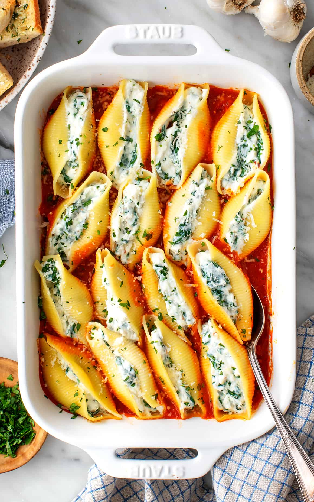

Stuffed Shells
These stuffed shells are saucy, cheesy comfort food at its best! They're filled with a creamy, flavorful mix of fresh spinach, lemon zest, and ricotta cheese.

Ingredients
- The shells - you need jumbo pasta shells.
- Tomato sauce - Use your favourite store-bought brand.
- Ricotta filling - Mix ricotta cheese and spinach. Add oregano, lemon zest, red peper flakes, garlic and pecorino cheese to deepen flavour.
Instructions
- Cook the pasta, it should be al dente when you drain it
- Blanch the spinach, squeeze out the excess moisture. Mix it together with the ricotta, pecorino, garlic, lemon zest, oregano and red pepper flakes
- Use small spoon to fill each shell with the cheese mixture
- Fill the baking dish and add the tomato sauce
- Cover the dish with foil and bake for 20 minutes at 200 °C